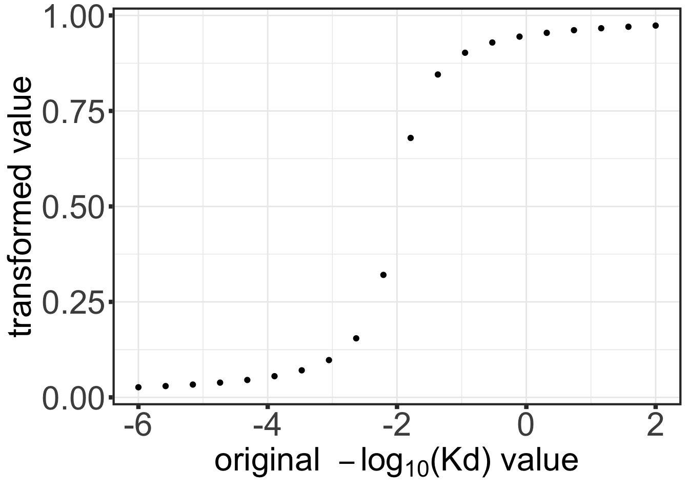

Last updated: 2021-12-24
Checks: 6 1
Knit directory: DepInfeR/analysis/
This reproducible R Markdown analysis was created with workflowr (version 1.7.0). The Checks tab describes the reproducibility checks that were applied when the results were created. The Past versions tab lists the development history.
The R Markdown is untracked by Git. To know which version of the R Markdown file created these results, you’ll want to first commit it to the Git repo. If you’re still working on the analysis, you can ignore this warning. When you’re finished, you can run wflow_publish to commit the R Markdown file and build the HTML.
Great job! The global environment was empty. Objects defined in the global environment can affect the analysis in your R Markdown file in unknown ways. For reproduciblity it’s best to always run the code in an empty environment.
The command set.seed(20211005) was run prior to running the code in the R Markdown file. Setting a seed ensures that any results that rely on randomness, e.g. subsampling or permutations, are reproducible.
Great job! Recording the operating system, R version, and package versions is critical for reproducibility.
Nice! There were no cached chunks for this analysis, so you can be confident that you successfully produced the results during this run.
Great job! Using relative paths to the files within your workflowr project makes it easier to run your code on other machines.
Great! You are using Git for version control. Tracking code development and connecting the code version to the results is critical for reproducibility.
The results in this page were generated with repository version 43be8a7. See the Past versions tab to see a history of the changes made to the R Markdown and HTML files.
Note that you need to be careful to ensure that all relevant files for the analysis have been committed to Git prior to generating the results (you can use wflow_publish or wflow_git_commit). workflowr only checks the R Markdown file, but you know if there are other scripts or data files that it depends on. Below is the status of the Git repository when the results were generated:
Ignored files:
Ignored: .DS_Store
Ignored: .Rhistory
Ignored: .Rproj.user/
Ignored: analysis/.DS_Store
Ignored: analysis/.Rhistory
Ignored: analysis/analysis_RNAseq_cache/
Ignored: analysis/figure/
Ignored: data/.DS_Store
Ignored: output/.DS_Store
Untracked files:
Untracked: analysis/analysis_EMBL2016.Rmd
Untracked: analysis/analysis_GDSC.Rmd
Untracked: analysis/analysis_RNAseq.Rmd
Untracked: analysis/analysis_beatAML.Rmd
Untracked: analysis/process_EMBL2016.Rmd
Untracked: analysis/process_GDSC.Rmd
Untracked: analysis/process_beatAML.Rmd
Untracked: analysis/process_kinobeads.Rmd
Untracked: code/utils.R
Untracked: data/BeatAML/
Untracked: data/EMBL2016/
Untracked: data/GDSC/
Untracked: data/Kinobeads/
Untracked: data/RNAseq/
Untracked: manuscript/
Untracked: output/BeatAML_result.RData
Untracked: output/EMBL_result.RData
Untracked: output/EMBL_resultSub.RData
Untracked: output/GDSC_result.RData
Untracked: output/allTargets.rds
Untracked: output/inputs_BeatAML.RData
Untracked: output/inputs_EMBL.RData
Untracked: output/inputs_GDSC.RData
Unstaged changes:
Modified: README.md
Modified: _workflowr.yml
Modified: analysis/_site.yml
Deleted: analysis/about.Rmd
Modified: analysis/index.Rmd
Deleted: analysis/license.Rmd
Deleted: output/README.md
Note that any generated files, e.g. HTML, png, CSS, etc., are not included in this status report because it is ok for generated content to have uncommitted changes.
There are no past versions. Publish this analysis with wflow_publish() to start tracking its development.
This document shows the pre-processing steps of the GDSC cancer cell line screening dataset from https://www.cancerrxgene.org/. A subset of leukemia and breast cancer cell lines was chosen for this analysis (called set1 hereinafter). The analyzed cancer types were
Diffuse Large B-Cell Lymphoma (DLBC)
Acute lymphocytic leukemia (ALL)
Acute myeloid leukemia (AML)
Breast carcinoma (BRCAHer+ / BRCAHer-)
The Her2 status was annotated manually.
Packages
library(depInfeR)
library(missForest)
library(tidyverse)
source("../code/utils.R")
knitr::opts_chunk$set(dev = c("png","pdf"))Load pre-processed kinobead table table
tarList <- readRDS("../output/allTargets.rds")Load GDSC raw data tables
# GDSC cell line screening data (for each of the cancer types and the table with the drug synonyms)
cancerxgene_ALL <- read_csv("../data/GDSC/cancerxgene_ALL_IC_GDSC1.csv")
cancerxgene_DLBC <- read_csv("../data/GDSC/cancerxgene_DLBC_IC_GDSC1.csv")
cancerxgene_AML <- read_csv("../data/GDSC/cancerxgene_AML_IC_GDSC1.csv")
cancerxgene_BRCA <- read_csv("../data/GDSC/cancerxgene_BRCA_IC_GDSC1.csv")
cancerxgene_syn <- read_csv("../data/GDSC/GDSC1_druglist_pubchem.csv")
# cancer cell line genetic background annotation
# mutations
BRCA_mut <- read_csv("../data/GDSC/BRCA_genetic.csv", col_names = TRUE, col_types = cols(.default = col_factor()))
ALL_mut <- read_csv("../data/GDSC/ALL_genetics.csv", col_names = TRUE, col_types = cols(.default = col_factor()))
LAML_mut <- read_csv("../data/GDSC/LAML_genetic.csv", col_names = TRUE, col_types = cols(.default = col_factor()))
DLBC_mut <- read_csv("../data/GDSC/DLBC_genetic.csv", col_names = TRUE, col_types = cols(.default = col_factor()))In order to apply the regression algorithm both datasets need to be filtered for matching drugs. Therefore, the used drug names need to be aligned and the datatables need to be filtered for the overlapping drug names. To find as many matching drug names as possible, we firstly add the synonym columns that we found in different tables for each of the datasets to the datatables. Secondly, we calculate the Hamming Distance between the drug names (including the synonyms columns) to find matching drug names with only slightly different spelling.
Combine drug-cell line matrices of GDSC cancer cell line set (set1)
bind_rows_keep_factors <- function(...) {
## Identify all factors
factors <- unique(unlist(
map(list(...), ~ select_if(..., is.factor) %>% names())
))
## Bind dataframes, convert characters back to factors
suppressWarnings(bind_rows(...)) %>%
mutate_at(dplyr::vars(one_of(factors)), factor)
}
cancerxgene_set1 <- bind_rows_keep_factors(cancerxgene_ALL, cancerxgene_AML, cancerxgene_DLBC, cancerxgene_BRCA)Attach synonyms to cancerxgene table
cancerxgene_set1$synonyms <- cancerxgene_syn$Synonyms[match(cancerxgene_set1$`Drug name`, cancerxgene_syn$Name)]Process drug names of cancerxgene table
cancerxgene_set1 <- mutate(cancerxgene_set1, `Drug name` = tolower(`Drug name`)) %>%
mutate(`Drug name` = gsub("[- ]","",`Drug name`)) %>% mutate(`Drug name`= gsub(" *\\(.*?\\) *", "",`Drug name`)) Find overlapped drugs by drug names
overDrug_cancerx_set1_name <- intersect(tarList$Drug, cancerxgene_set1$`Drug name`)Assign manually identified synonyms
tarList <- mutate(tarList, Drug = ifelse(Drug=="alvocidib", "flavopiridol", Drug))
tarList <- mutate(tarList, Drug = ifelse(Drug=="canertinib", "ci1033", Drug))
tarList <- mutate(tarList, Drug = ifelse(Drug=="dacomitinib", "pf00299804", Drug))
tarList <- mutate(tarList, Drug = ifelse(Drug=="nintedanib", "bibf1120", Drug))Get the final overlapped drug list
finalList <- intersect(tarList$Drug, cancerxgene_set1$`Drug name`)Rename drug column in cancerxgene
cancerxgene_set1 <- dplyr::rename(cancerxgene_set1, Drug = `Drug name`)
cancerxgene_set1_druglist <- filter(cancerxgene_set1, !is.na(`Drug Id`), !duplicated(`Drug Id`), !duplicated(Drug))Combine the lists
targets <- left_join(tarList, cancerxgene_set1_druglist, by = "Drug") %>% dplyr::select(Drug, `Drug Id`, `Target Classification`, EC50,`Apparent Kd`, `Gene Name`) %>%
filter(!is.na(Drug)) %>%
filter(Drug %in% finalList) How many drugs?
length(unique(targets$Drug))[1] 68Change column names
colnames(targets) <- c("drugName", "drugID", "targetClassification","EC50","Kd","targetName")Turn target table into drug-target affinity matrix
tarMat_kd <- dplyr::filter(targets, targetClassification == "High confidence") %>%
dplyr::select(drugName, targetName, Kd) %>%
spread(key = "targetName", value = "Kd") %>%
remove_rownames() %>% column_to_rownames("drugName") %>% as.matrix()Function to transform Kd values (using arctan function)
testTab <- tibble(x = seq(-6,2,length.out = 20)) %>% mutate(y = arcTrans(x, b=2, g=3))
ggplot(testTab, aes(x=x,y=y)) + geom_point() +
xlab(bquote("original "~-log[10]*"(Kd) value")) + ylab("transformed value") +
theme_custom
As a pre-processing of the drug-protein affinity matrix with kd values (or optionally other affinity measurement values at roughly normal distribution) we chose to perform the following steps:
ProcessTargetResults <- processTarget(tarMat_kd, KdAsInput = TRUE , removeCorrelated = TRUE)The z-score was chosen as a suitable measurement value for our drug screening response matrix as it corresponds to a normalization for each drug over all cell lines. When working with AUC or IC50 values, a suitable normalization of the values is recommended. In this analysis I used the z-score of the AUC values.
sanger_viab <- dplyr::filter(cancerxgene_set1, `Drug Id` %in%targetsGDSC$drugID) %>%
dplyr::select(Drug, `Drug Id`, `Cell line name` , `Cosmic sample Id`, `TCGA classification`, IC50, AUC, `Max conc`,RMSE, `Z score`)
sanger_matrix <- sanger_viab %>% dplyr::select(Drug, `Cell line name`, AUC) %>%
tidyr::spread(key = `Cell line name`, value = AUC) %>%
remove_rownames() %>% column_to_rownames("Drug") %>%
as.matrix()As we have some missing values in our response matrix, we check the distribution of our missing values across all cell lines
missTab <- data.frame(NA_cutoff = character(0), remain_celllines = character(0), stringsAsFactors = FALSE)
for (i in 0 : 138) {
a <- dim(sanger_matrix[,colSums(is.na(sanger_matrix)) <= i])[2]
missTab [i,] <- c(i, a)
}
#missTab
#plot(missTab, type = "l")From looking at the missing value distribution, we choose cell lines with a maximum of 24 missing values per cell line (= 35%) as usable for the MissForest imputation method.
sanger_mat_subset <- sanger_matrix[,colSums(is.na(sanger_matrix)) <= 24]impRes <- missForest(t(sanger_mat_subset)) missForest iteration 1 in progress...done!
missForest iteration 2 in progress...done!
missForest iteration 3 in progress...done!
missForest iteration 4 in progress...done!
missForest iteration 5 in progress...done!
missForest iteration 6 in progress...done!
missForest iteration 7 in progress...done!imp_missforest <- impRes$ximp
sanger_mat_forest <- t(imp_missforest)
colnames(sanger_mat_forest) <- colnames(sanger_mat_forest)
rownames(sanger_mat_forest) <- rownames(sanger_mat_forest)sanger_mat_forest.scale <- t(mscale(t(sanger_mat_forest)))mutation_GDSC <- readxl::read_xlsx("../data/GDSC/mutation_GDSC.xlsx") %>%
mutate(TCGA.classification = str_replace(TCGA.classification, "LAML","AML")) %>%
data.frame() %>%
column_to_rownames("cellLine") ProcessTargetResults_GDSC <- ProcessTargetResults
tarMat_GDSC <- ProcessTargetResults$targetMatrix
viabMat_GDSC <- sanger_mat_forest.scale[rownames(tarMat_GDSC),]
save(tarMat_GDSC, viabMat_GDSC, ProcessTargetResults_GDSC, mutation_GDSC,
file = "../output/inputs_GDSC.RData")
sessionInfo()R version 4.1.2 (2021-11-01)
Platform: x86_64-apple-darwin17.0 (64-bit)
Running under: macOS Big Sur 10.16
Matrix products: default
BLAS: /Library/Frameworks/R.framework/Versions/4.1/Resources/lib/libRblas.0.dylib
LAPACK: /Library/Frameworks/R.framework/Versions/4.1/Resources/lib/libRlapack.dylib
locale:
[1] en_US.UTF-8/en_US.UTF-8/en_US.UTF-8/C/en_US.UTF-8/en_US.UTF-8
attached base packages:
[1] stats graphics grDevices utils datasets methods base
other attached packages:
[1] forcats_0.5.1 stringr_1.4.0 dplyr_1.0.7
[4] purrr_0.3.4 readr_2.1.1 tidyr_1.1.4
[7] tibble_3.1.6 ggplot2_3.3.5 tidyverse_1.3.1
[10] missForest_1.4 itertools_0.1-3 iterators_1.0.13
[13] foreach_1.5.1 randomForest_4.6-14 depInfeR_0.1.0
loaded via a namespace (and not attached):
[1] colorspace_2.0-2 ellipsis_0.3.2 rprojroot_2.0.2
[4] htmlTable_2.3.0 corpcor_1.6.10 base64enc_0.1-3
[7] fs_1.5.2 rstudioapi_0.13 lavaan_0.6-9
[10] farver_2.1.0 bit64_4.0.5 fansi_0.5.0
[13] lubridate_1.8.0 xml2_1.3.3 codetools_0.2-18
[16] splines_4.1.2 mnormt_2.0.2 doParallel_1.0.16
[19] knitr_1.36 glasso_1.11 rlist_0.4.6.2
[22] Formula_1.2-4 jsonlite_1.7.2 workflowr_1.7.0
[25] broom_0.7.10 cluster_2.1.2 dbplyr_2.1.1
[28] png_0.1-7 compiler_4.1.2 httr_1.4.2
[31] backports_1.4.1 assertthat_0.2.1 Matrix_1.4-0
[34] fastmap_1.1.0 cli_3.1.0 later_1.3.0
[37] htmltools_0.5.2 tools_4.1.2 igraph_1.2.10
[40] gtable_0.3.0 glue_1.5.1 reshape2_1.4.4
[43] Rcpp_1.0.7 cellranger_1.1.0 jquerylib_0.1.4
[46] vctrs_0.3.8 nlme_3.1-153 psych_2.1.9
[49] xfun_0.29 rvest_1.0.2 lifecycle_1.0.1
[52] gtools_3.9.2 scales_1.1.1 vroom_1.5.7
[55] hms_1.1.1 promises_1.2.0.1 parallel_4.1.2
[58] RColorBrewer_1.1-2 yaml_2.2.1 pbapply_1.5-0
[61] gridExtra_2.3 sass_0.4.0 rpart_4.1-15
[64] latticeExtra_0.6-29 stringi_1.7.6 highr_0.9
[67] checkmate_2.0.0 shape_1.4.6 rlang_0.4.12
[70] pkgconfig_2.0.3 matrixStats_0.61.0 evaluate_0.14
[73] lattice_0.20-45 htmlwidgets_1.5.4 labeling_0.4.2
[76] bit_4.0.4 tidyselect_1.1.1 ggsci_2.9
[79] plyr_1.8.6 magrittr_2.0.1 R6_2.5.1
[82] generics_0.1.1 Hmisc_4.6-0 DBI_1.1.1
[85] pillar_1.6.4 haven_2.4.3 foreign_0.8-81
[88] withr_2.4.3 abind_1.4-5 survival_3.2-13
[91] nnet_7.3-16 modelr_0.1.8 crayon_1.4.2
[94] fdrtool_1.2.17 utf8_1.2.2 tmvnsim_1.0-2
[97] tzdb_0.2.0 rmarkdown_2.11 jpeg_0.1-9
[100] grid_4.1.2 readxl_1.3.1 qgraph_1.9
[103] pbivnorm_0.6.0 data.table_1.14.2 git2r_0.29.0
[106] reprex_2.0.1 digest_0.6.29 httpuv_1.6.4
[109] stats4_4.1.2 munsell_0.5.0 glmnet_4.1-3
[112] bslib_0.3.1